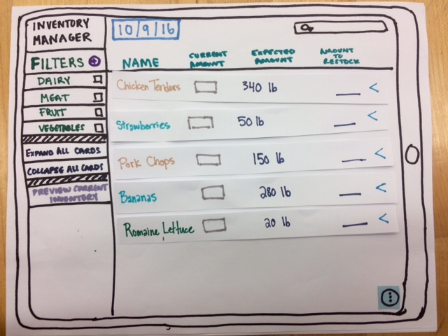

{kind=link}
{kind=link}
{kind=link}
Final Refinement
Final Prototype
Inventory manager provides a simple, tablet-based workflow allowing on-the-go users to take inventory without the hassle of clipboards and paper. Although we originally were designing specifically for a small-college dining hall staff, this design would be useful to any users who take inventory of food products (or inventory in general, if the food-specific language we use in our design was removed.)
Our final design is functionally very similar to previous iterations, but we have refined our design language and the overall “look and feel” of our prototype. Also, as we will discuss later, we completed an additional proof of concept in the form of an Android Studio prototype. We included a link below to a video of a user interacting with the Android prototype.
Final prototypeAs you can see by interacting with our prototype, users are presented with a one-page app that allows them to manage the ingredients in their current inventory by searching, filtering, and entering values. Ingredients take the form of “expandable cards” in the style of Material Design. They have some inventory-specific values shown in their unexpanded state, including a field that allows the user to enter the amount remaining of a certain ingredient. Once an amount is entered, the app will calculate the amount the user needs to order from their purveyor. The left navigation bar allows users to change which ingredients they see in the ingredient list by providing filters. Checking the meat filter will only show meat products, and so on. The user can add an ingredient by clicking the plus button in the bottom right-hand corner of the ingredient section. The top nav bar provides additional sorting functionality by allowing the user to sort ingredients by name or some other parameter.
Prototype Evolution
When we first decided to focus on creating an interface to simplify the process of inventory management, we created a paper prototype to include all the pain points our user brought up during our initial user interview.

In a previous phase, we converted the paper prototype into a Figma/Invision prototype and tweaked our design to make it consistent with the Material Design guidelines for tablet devices. Below is a first draft of the tablet prototype as well as a refined version from the end of the design refinement phase. A more detailed discussion about the evolution of our prototype at the time can be found .Also, here is our first invision draft.
As part of our final refinement, we conducted a usability study in order to address issues that arose in our heuristic evaluation. Every person that conducted a heuristic eval on our prototype independently mentioned that the “add” and “export” buttons were underneath the same floating action button, which sometimes led to confusion when they tried to add an ingredient or export the final inventory spreadsheet. We initially didn’t expect this response as we thought that users should have no difficulty finding the “add” button, which just goes to show the importance of conducting usability studies.
After we conducted the test, we found two main reasons that users were confused by the button placement: first, there was already an “add” button on the screen for adding filters and it was causing confusion for the user, as they defaulted to trying to hit that button. Secondly, users were not as familiar with FABs (floating action buttons) as we had imagined. As a result, we decided to put the “add” ingredient button and “export” button on the main screen of the app. We conducted a set of A/B tests to validate our new design. In all the tests, users were able to find the button faster than on our previous design. We created our final prototype after these A/B tests, which you saw and interacted with above.
Additional Heuristic Evaluation Responses
In our last phase’s write-up here, we mentioned some of the changes we made in response to our heuristic evaluation. However, we didn’t write about some of the suggested changes in the evaluation that we decided not to make, due to plans to investigate the comments further. While reading over the feedback, we noticed a common theme. Users were giving feedback that was outside the scope of our investigation, which was largely in part to our script not being reworked for outside eyes. After realizing this, we rewrote much of the script to better explain the goals of the script walkthrough. If this project were to continue, an additional heuristic evaluation would be performed to reflect the changes in the script (and to get feedback on the features we implemented from suggestions in the original heuristic eval).
We were surprised at how many suggestions from the heuristic evaluation overlapped between users. For example, multiple users commented on the screen where we had both a close and cancel button. Additionally, although we didn’t specify that we were trying to use Google’s material design language in our original script, multiple users pointed out instances where we were not following the appropriate material design specifications. This led us to wonder if we could perform an additional heuristic evaluation with people who were not familiar with design guidelines, if only to get an additional outside perspective.
While we addressed as many items from the heuristic evaluation as possible, we wanted to address a few items that we did not talk about in our last heuristic evaluation response:
- Returning to a previous screen: This was a limitation of our prototyping tool, not our design. If we were to give the user of our prototype freedom to interact with a completely dynamic Invision prototype, we would have had to potentially create hundreds of different screens. By having one workflow that we could test directly through a guided script, we wouldn’t need to tediously create screens with minor differences. However, it should be noted that our final prototype built from actual code in android studio, we did not need to hardcode values in this manner.
- Make the whole ingredient card clickable: In our final prototype, created in Android Studio, the whole card is clickable except for the input text portion (which, if tapped, will allow you to input the amount of an ingredient you have remaining.)
Evidence for Final Design
For our final prototype, we initially decided to create a more complete invision prototype, as we were already comfortable with the invision/figma combination and had developed a smooth workflow. Nearing the end of the project we noticed that we had a bit of extra time and we were able to create a real-live code prototype in Android Studio. We developed these two prototypes alongside one another so we could easily test out new features on the invision side and get experience implementing them on the android side. At the end of this project, we have completed both prototypes. They are linked above.
We’d like to recap some of our most critical design decisions throughout our iteration process:
- Ingredient “cards” instead of a spreadsheet grid. This was essentially the decision that our entire project was based off of. We know that our users love to use spreadsheets, but when it comes to walking around the kitchen to take inventory, desktop computers aren’t exactly “mobile” and their current method uses stacks of paper on a clipboard. On the flip side, existing tablet spreadsheet apps such as the mobile versions of Google Sheets and Microsoft Excel are finicky and difficult to use with one hand as the grid squares are very small. The use of cards is a better way for the user to interact with data, as the entire card is clickable and will expand to show more data as needed, which eliminates the need for sideways scrolling (required in spreadsheet apps if the data goes off the screen to the right).
- No nested menus. Although earlier versions of our prototype contained nested/expandable menus to make the interface “cleaner”, we found that users who were on the go often did not want to be forced to look these menus even if they only added one layer to the navigation flow. We decided to get rid of nested menus entirely and spread the buttons around the interface in logical places. For example, we placed the “add ingredient” button in the bottom left corner of the ingredient list where it is easily located and pressed, as opposed to its original location inside a nested menu in the same location. This specific example was tested during our formal usability study (A/B test).
As mentioned above, we conducted an A/B test to test one piece of heuristic evaluation feedback that seemed particularly important. Our test procedure and results can be found here. In short, we varied the order in which we showed users two user interfaces, one with the nested menu and the other without. We documented their reactions to each interface and afterwards asked them which one they liked better and why. Unsurprisingly, the A/B test results were unanimously in favor of un-nesting the menus in our interface. We included this design decision in our final design.
Shortcomings and Future Work
One notable omission from our prototype is the login/signup screen. We decided that we wanted to focus on the creation a “new” kind of interface that would take a unique approach to the traditional tablet spreadsheet representation. At no point was the inclusion of a login/signup screen crucial to the user experience that we wanted to create with the spreadsheet (as the user would only need to set up the app once), so we decided to forgo it to work on the more relevant parts of our design. A continuation of this project would expand the design to include a login/signup screen that utilizes the design language we have developed in our prototype thus far.
We’ve also discussed the possibility of including a short tutorial for first-time users. Feedback from our heuristic evaluation was clear that the app itself was fairly easy to use, even if our script at the time had been a bit confusing. We don’t think that we would need to include anything more than a few tasks long - perhaps going over how to add an ingredient, add current values for some ingredients, and export the final inventory. The addition of this tutorial might not be necessary for most users, but its inclusion would make us feel more secure releasing a product like this to the public. We could of course give the user the option to skip the tutorial if they had used the app before or if they felt that it was unneeded.
If this project was to proceed in the future, we would continue by conducting many more usability tests (as mentioned above) with people both inside and outside our user group, using our now more dynamic Android prototype. This would allow for a more dynamic user experience, providing pathways for users to make mistakes and recover from them rather than being guided through an invision prototype. (Invision highlights the possible selection spaces with blue circles if the user tries to click on something that is not a hotspot).
Another area that would be interesting to explore is the possibility of creating a desktop companion to this app to allow users to seamlessly transition between computer and tablet. This would also provide an opportunity to create a polished import tool. One pain point we’ve found in our design is that a new user must import all of their ingredients to the app which could take a very long time if they are running a large kitchen. Ideally, such a tool would be able to take an existing inventory spreadsheet and incorporate that information directly into the app.
Final Presentation: Final Slide Deck For Presentation
Effort Chart
| Description | Deniz Celik | Jason Lan | Hannah Twigg-Smith | Hannah Wilk |
|---|---|---|---|---|
| Invision Prototype | 5 | 90 | 0 | 5 |
| Usability Test + Write Up | 0 | 25 | 35 | 40 |
| Write-up | 0 | 0 | 85 | 15 |
| Android Prototype | 100 | 0 | 0 | 0 |
| Presentation | 7.5 | 0 | 7.5 | 85 |
| Website | 1 | 99 | 0 | 0 |